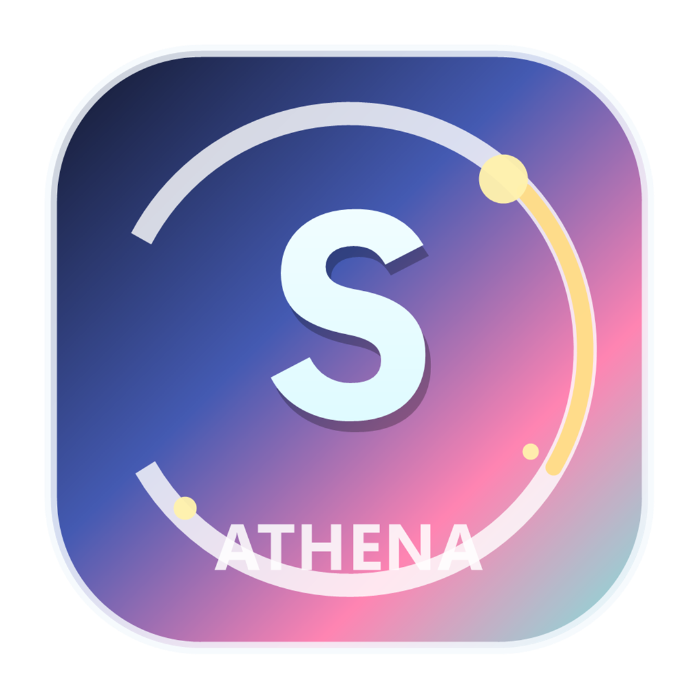

深蓝紫背景沉下去
第一秒只保留微弱网格和远处光晕，让用户进入安静状态。

AthenaMuse & Venus 回到首页这一页专门宣传 Athena 的启动仪式感：黑紫背景、金色线条、神殿开门、光线展开，然后进入半透明玻璃聊天界面。
每一步都可以作为短视频分镜，也能变成官网滚动动画。
第一秒只保留微弱网格和远处光晕，让用户进入安静状态。
屋檐、柱子、台阶用细线逐渐描出，形成 Athena 的仪式感。
门不是实体，而是两组几何线条外移，门后透出更亮的金色光。
神殿线条退为背景纹理，玻璃面板浮现，进入真实对话。